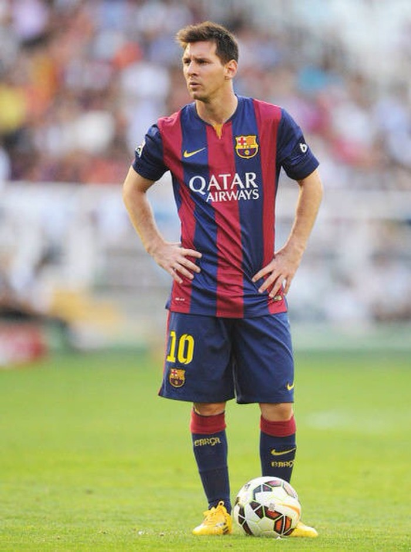

<!DOCTYPE html>
<html lang="zh-CN">

<head>
    <meta charset="UTF-8">
    <meta name="viewport" content="width=device-width, initial-scale=1, maximum-scale=1, user-scalable=no" />
    <meta http-equiv="X-UA-Compatible" content="IE=Edge">
    <meta name="renderer" content="webkit">
    <meta name="apple-mobile-web-app-title" content="封面新闻" />
    <meta name="format-detection" content="telephone=no, email=no, address=no"/>
    <title>封面新闻-因人而异</title>
    <link rel="alternate icon" type="image/png" href="http://wapcdn.thecover.cn/wap/1.0.0/img/favicon.png">
    <link rel="apple-touch-icon-precomposed" href="http://wapcdn.thecover.cn/wap/1.0.0/img/favicon.png">
    <link type="text/css" rel="stylesheet" href="http://wapcdn.thecover.cn/wap/1.0.0/css/common.css">
    <link type="text/css" rel="stylesheet" href="http://wapcdn.thecover.cn/wap/1.0.0/css/wiki.css">
</head>
<body>
    <div class="actionTitle">
        <div class="actionBack"></div>
        <!-- <div class="actionShare"></div> -->
    </div>
    <!-- <header class="wiki-head">
        <div class="wiki-imgAlbum">
            <div class="wiki-imgContent"></div>
            <div class="wiki-imgsize">55图</div>
            <div class="wiki-imgver"></div>
        </div>
        <div class="wiki-head-body">
            <div class="wiki-head-title">
                里奥梅西
            </div>
            <div class="wiki-rio-body">
                <div class="wiki-rio-titlebg">
                    <div class="wiki-rio-tbglf"></div>
                    <div class="wiki-rio-tbgrg"></div>
                </div>
                <div class="wiki-rio-title">
                    中国队<br><span>游泳选手</span>
                </div>
                <div class="wiki-rio-table">
                    <div class="wiki-rio-item wiki-rio-itemh">
                        <div class="wiki-rio-small">ta的运动小项</div>
                        <div class="wiki-rio-place">名次预测</div>
                        <div class="wiki-rio-prob">夺冠几率</div>
                    </div>
                    <div class="wiki-rio-item">
                        <div class="wiki-rio-small">女子单打名字很长很长</div>
                        <div class="wiki-rio-place">
                            <div class="wiki-rio-count">100</div>
                        </div>
                        <div class="wiki-rio-prob">
                            <div class="wiki-rio-progress">
                                <div class="wiki-rio-bar"><div style="width: 60%;"></div></div>
                                60<span>%</span>
                            </div>
                        </div>
                    </div>
                    <div class="wiki-rio-item">
                        <div class="wiki-rio-small">女子单打名字很长很长</div>
                        <div class="wiki-rio-place">
                            <div class="wiki-rio-count">100</div>
                        </div>
                        <div class="wiki-rio-prob">
                            <div class="wiki-rio-progress">
                                <div class="wiki-rio-bar"><div style="width: 60%;"></div></div>
                                60<span>%</span>
                            </div>
                        </div>
                    </div>
                    <div class="wiki-rio-item">
                        <div class="wiki-rio-small">女子单打名字很长很长</div>
                        <div class="wiki-rio-place">
                            <div class="wiki-rio-count">100</div>
                        </div>
                        <div class="wiki-rio-prob">
                            <div class="wiki-rio-progress">
                                <div class="wiki-rio-bar"><div style="width: 60%;"></div></div>
                                60<span>%</span>
                            </div>
                        </div>
                    </div>
                    <div class="wiki-rio-down">
                        
                    </div>
                </div>
            </div>
            <div class="wiki-head-desc">
                <p>里奥·梅西（Lionel Messi），1987年6月24日出生于圣菲省罗萨里奥市，阿根廷足球运动员。</p>
                <p>2000年，梅西加入巴塞罗那俱乐部。2005年，阿根廷青年队夺取世青赛冠军，梅西赢得了金球奖和金靴奖双项大奖。2007年4月18日，梅西在国王杯半决赛对赫塔菲时复制了马拉多纳在世界杯上的.</p>
            </div>
        </div>
    </header>
    <section class="wiki-section">
        <article class="wiki-content">
            <div class="wiki-title">基本信息</div>
            <div class="wiki-info">
                <div class="wiki-bascinfo">
                    <ul>
                        <li>
                            <div class="wiki-bascname">中文名</div>
                            <div class="wiki-basctext">里奥内尔·安德雷斯·梅西</div>
                        </li>
                        <li>
                            <div class="wiki-bascname">别名</div>
                            <div class="wiki-basctext">Lionel  Andres  Messi</div>
                        </li>
                        <li>
                            <div class="wiki-bascname">国籍</div>
                            <div class="wiki-basctext">阿根廷/西班牙（双重国籍）</div>
                        </li>
                        <li>
                            <div class="wiki-bascname">出生地</div>
                            <div class="wiki-basctext">阿根廷圣菲省罗莎里奥市</div>
                        </li>
                        <li>
                            <div class="wiki-bascname">出身日期</div>
                            <div class="wiki-basctext">1987年6月24日</div>
                        </li>
                    </ul>
                    <div class="wiki-opendown"></div>
                </div>
            </div>
        </article>
    </section>
    <section class="wiki-section">
        <article class="wiki-content">
            <div class="wiki-title">运动生涯</div>
            <div class="wiki-info">
                <p>里奥·梅西（Lionel Messi），1987年6月24日出生于圣菲省罗萨里奥市，阿根廷足球运动员。</p>
                <p>2000年，梅西加入巴塞罗那俱乐部。2005年，阿根廷青年队夺取世青赛冠军，梅西赢得了金球奖和金靴奖双项大奖。2007年4月18日，梅西在国王杯半决赛对赫塔菲时复制了马拉多纳在世界杯上的.</p>
            </div>
        </article>
        <article class="wiki-content">
            <div class="wiki-title">技术特点</div>
            <div class="wiki-info">
                <p>对于梅西来说，成长期间药物治疗的帮助只是一方面，更重要的还是他非凡的才华让他最终被足坛认可。梅西经常有头球攻门的惊艳，而速度则是他撕破防线的利器。他的左右脚极为均衡，射术精湛。梅西的运球平衡力强，身体对抗能力高。梅西脚下灵活，左右脚内切极强。</p>
            </div>
        </article>
    </section> -->
</body>
<script src="http://wapcdn.thecover.cn/wap/1.0.0/js/common.js"></script>
</html>